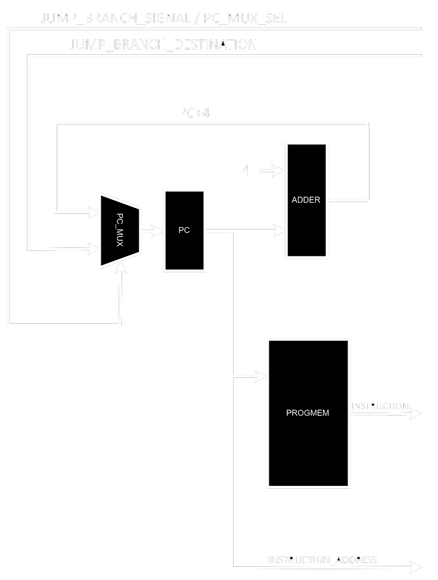

Introduction
Computing has evolved in such a way that it has become increasingly impossible to be fully understood without several abstractions layers hiding complexities. A computer programmer does not need to directly interact with the machine anymore, high level programming languages (which simply means abstracted programming languages) allow you to write what you want the computer to do in a way that’s more easily understood by humans, making it significantly easier to express complex algorithms and mathematical ideas in general.
High level programming languages are usually transformed into machine code through the help of compilers, assemblers and linkers. In a nutshell, their job is to take your written code and “convert” it into the actual instructions a computer can “understand”. Note that this allows the same piece of code to target different instruction set architectures since you don’t actually need to rewrite the code itself, you just need to recompile it.
But what is an instruction set architecture? An ISA defines which instructions are available, what their behaviour is and how they are encoded. It also defines the set of registers, what they represent, how you can access them, the memory model and the levels of privilege. You might feel tempted to think the ISA dictates how a given processor internally works but this is not true. The ISA is just the software/hardware interface, it’s merely a standard that needs to be followed if you want programs to work in a wide array of processors with different characteristics without having to recompile it each time.
How can CPUs with the same ISA be different then? To answer this I first want you to think about it in a software way. The action of sorting only has a single valid output (the sorted result) but you can achieve the same thing using different algorithms (binary search, bubble sort, quick sort, etc). It’s the exact same thing for an ISA. An instruction defines what the output should be for a given input, but it does not define how this output should be computed.
The field of computer architecture comprises everything related to the design of computing systems at an abstracted level, which means understanding ISAs, pipelines, superscalar CPUs, Out-of-Order Execution, caching, GPUs, TPUs, etc. The field of digital design is responsible for implementing said things, usually through RTL design using a HDL such as VHDL or SystemVerilog.
The following sections will guide you through the implementation of a 5-stage pipeline in-order execution scalar RV32I CPU core written in VHDL, this might sound relatively complicated right now but if you continue you’ll see it’s actually quite simple.
The RV32I ISA
RISC-V is an open-source and royalty-free ISA that has been gaining a lot of traction in the last few years. Think of it as a competitor to x86 and ARM (you’ve heard those 2 names several times right?) that allows universities and companies to freely innovate building accelerators and custom domain-specific systems. The ISA aims to be the Linux of hardware and I highly recommend reading my blog post on open-hardware.
Without further ado, I’ll briefly introduce the RISC-V ISA so we can understand what we’ll be implementing in the next sections.
RISC-V is a modular ISA, which means not all instructions (or registers) need to be implemented if your implementation doesn’t need them. The base set with only the integer instructions is called the I subset, and it exists in 32b, 64b and 128b versions, RV32I, RV64I and RV128I, respectively. The I subset defines 32 internal general purpose registers but a reduced version for embedded systems exists with 16 only, the E subset (RV32E, RV64E and RV128E).
Extensions to the base set simply get their names appended into the suffix, so for example a CPU that implements the multiplication, atomics and compressed instructions extensions on top of RV32E has a RV32EMAC ISA. Some extensions can be “grouped” together to simplify the naming scheme, so instead of having RV64IMAFDC with all extensions explicitly stated, we have RV64GC, G means general purpose and shortens IMAFD.
The list of extensions is always changing and I recommend checking the most recent PDF at https://riscv.org/specifications/isa-spec-pdf/.
Instructions are grouped into encoding schemes by the kind of operation they perform, and the least significant bits tell the encoder how long the instruction is (in the case there’s support for the C extension).

RV32I has instructions for integer operations between values contained in 2 general purpose registers (R-type), or between one of them and an encoded immediate (I-type).
There are instructions for logic gates, simple arithmetic functions, setting values (compares then sets) and bitwise shifting (both arithmetic and logical).
You may notice that there is no MOV instruction, and that’s because the register x0 always has its value set to 0, which means you can simply ADD using it as either rs1 or rs2 to move data to another register.
Memory access instructions are split into loads and stores, for the various supported bit lengths, B for 8 bits (byte), H for 16 bits (half-word) and W for 32 bits (word). Load instructions sometimes have to fill the most significant bits, and for that reason there are signed and unsigned variants.

There’s also an instruction to load an upper immediate (most significant bits) into a register. Most other instructions only fit a lower immediate due to the encoding constraints, which means you usually need 2 separate instructions in order to fully modify a single register or the program counter. AUIPC adds an upper immediate into the current value stored in PC, and this will make sense as soon as we show the branching instructions.

Branching instructions compare values contained in 2 registers and then decide whether or not a jump should be made to the address pointed by PC + imm. You can branch based on whether values are equal, not equal, lower or greater than (U denotes unsigned comparisons).
The least significant bit is unnecessary in this case because jumps should be made to valid addresses, and odd numbers will always point to the second byte of a given instruction (not a valid destination regardless of them being 32 or 16 bits long).
Finally, there are the unconditional jump instructions. JAL (jump and link) performs a jump relative to the PC (PC + imm) with a 20 bits long upper immediate and stores the return address (PC + 4) into a given register (usually x1). JALR (jump and link register) performs a jump relative to a register with a 12 bits long lower immediate, also saving the return address into a chosen register.

You need to notice that to cover the entire memory address space you would need to use 2 instructions, like LUI or AUIPC followed by JALR (first modifies the 20 most significant bits of a given register and the second the least 12).
For a more detailed explanation of each instruction, please refer to the actual specification. In any case, those instructions simply define how they need to arrive at the CPU core and what their output should be for any given input, they do not define how those operations will be performed in hardware.
RTL Design Basics
RTL stands for register transfer level, if you’ve somehow managed to reach this far without knowing what registers are, then allow me to introduce them in a simple way. Registers are structures made of logic gates capable of holding logic values. We usually employ registers when designing synchronous digital systems, since they allow us to break the problems into smaller portions, avoid race conditions and hold results (whether or not they’re transient).
We can see a simple example in the image below. The NOT gate simply inverts the bit coming out of the register, and then this is written into the register itself whenever the clock goes into a rising edge (the clock is the arbiter, the value only changes when the arbiter allows it to).
Using an EDA synthesis tool, you can create such a circuit out of a hardware description language (HDL). The example below is a VHDL equivalent to the circuit.
process(clk)
begin
if rising_edge(clk) then
Q <= not D;
end if;
end process;
You might be thinking that this does not look all that different from programming languages, and you’re right. Hardware description is very similar to programming in various ways, but don’t let them make you think it’s the exact same thing, because it’s not. When you’re programming, you’re describing an algorithm that will be executed by a physical structure called a processor. Your code gets compiled into small instructions and each instruction tells the processor to perform a simple task. The execution of those several small instructions result in your program as a whole.
When you’re describing hardware the story is a little bit different, you’re literally describing what the structure is. You’re not telling a processor what to do, you’re literally creating a description that will map to physical transistors and create a maze called a datapath (the literal path the data will take). Software code is usually executed in a procedural manner but hardware description is not even “executed” in the first place. The structures you describe will always be there and you need to remember that, it’s like parallel programming in the sense that you can have several things going on at the same time, but it’s not because you have several threads, you literally have physical structures that are always there.
Our example here was pretty simple, only 2 things could happen at all and the behaviour was entirely automatic depending solely on a clock input. When you actually need to control it you usually split the design into 2 big structures, the controller and the datapath. The controller is responsible for sending control signals to logic elements such as registers, muxes and ALUs, so you can control the flow of data and which operations are made.
In a CPU, the control unit can also be called the decoder unit, because it receives instructions from memory and then generates control signals so those instructions can be executed in the datapath. You do not need a single path for each individual instruction, several structures can be shared and with the help of muxes you can have a very efficient design capable of performing different tasks.
Computer Architecture Basics
Now that we understand the extreme basics of digital design, we can go up again to a higher abstraction layer just to know what we need for our processor for it to work. We already know the decoder needs to be able to receive instructions, decode them and generate control signals, but the datapath is still undisclosed.
Let’s take a simple load instruction as an example “lb rd, rs1, imm”. This instruction needs to take a value from the internal register rs1, then add it to imm in the ALU to generate the address, then access the memory at the generated address and then save its contents into the internal register rd. From this alone we can infer a few steps: register read, address generation, memory access and register write. But let’s not forget that we also need to fetch the instruction from memory and decode it. The following image depicts this step by step procedure in what we call the classic RISC pipeline.
- Instruction Fetch: Where Instructions are fetched from memory, the PC is also incremented so it points to the next instruction.
- Instruction Decode: Where instructions are decoded and control signals are generated, since rs1 and rs2 are easily mapped to control signals the register file can be placed in the same stage.
- Execute: Where logic and arithmetic operations are executed, addresses are calculated and branches are decided to be taken or not.
- Memory Access: Where the memory is accessed during load or store instructions.
- Write back: Where the results are written back to the register file.
A simple CPU implementation has all those operations stacked in series in a procedural way, which means there are no registers in-between and everything can be done in a single clock cycle. This however, means the clock period needs to be long so there’s enough time for the signal to propagate through all the logic gates in the path (logic gates are implemented with transistors, and logic values are nothing more than voltage in a literal wire). The maximum clock frequency you can input and your circuit will still work is limited by what we call the critical path, which is the longest continuous logic path in a given circuit.
The technique of pipelining allows us to greatly reduce the critical path by inserting registers to hold values between the stages. In this case, instead of finishing the entire instruction in a single clock period we’ll only finish part of it, the entire instruction will need 5 clock cycles (for a 5-stage pipeline) instead of a single one.
You might be thinking that this sounds bad, but remember what I said before about RTL design being kinda like parallel programming, inserting registers in-between means we can get work done on 5 different instructions at the same time! With each of them getting part of it done in an individual pipeline stage. The following image depicts how instructions are executed in a 5-stage pipeline.
Of course your datapath will still have a critical path somewhere even splitting it into several stages like this, and breaking stages even further is what we call superpipelining (so instead of having EX we have EX1, EX2, EX3, etc). Higher performance CPUs capitalise on this even more by having multiple pipelines in parallel and executing instructions out of order, after properly calculating their dependency graph and finding independent portions of code within a single thread.
Pipelining greatly increases performance but it can also create problems. To give you an easy example, what should the CPU do after receiving a branch instruction? Naturally it would simply keep incrementing the program counter but now we don’t know which instruction is supposed to be the next one, this problem is called a control hazard and it has created an entire subfield of computer architecture dedicated exclusively to researching branch prediction and how to improve it (current state of the art CPUs have a guess rate of over 99%!). For a simple CPU though, we can simply assume the branch is not taken, which means we don’t need to do anything about the branch until it’s proven that it should’ve been taken.
Ok but what happens if the branch condition is indeed true? Well the first problem is that now we have to discard the instructions that we should not have started executing. This is called pipeline flushing and can be done directly to the registers separating the stages (handy, isn’t it?). The second problem is flushing causes more severe performance issues the longer your pipeline is, and we can only get away with something as simple as this because your pipeline is very short (modern CPUs are usually almost 20 stages long).
Ok so now that we know how to solve the branching problem, is pipelining good to go now? Not yet. Pipelining can also give you data hazards, which happen when an instruction currently in the execute stage has rs1 or rs2 equal to rd in the instructions currently in the memory access or write back stages (since those instructions are still being executed and their results have not been written back yet). The solution to this problem is data forwarding, which basically means taking those values from the last 2 stages and bringing them back to the EX stage.
Some textbooks will tell you that you also need forwarding when rs1 or rs2 in the ID stage coincides with rd in the WB stage, but if your register file has registers that update their values during the falling edges of the clock, you're guaranteed to have the correct values before the next rising edge which is when those get passed to the next stage.
The last problem you might encounter with pipelining is structural hazards, when you have 2 or more instructions that depend on the same structure at the same time, but this won’t happen in this implementation as it was thought out to be pipelined from the start. The final high level schematic can be seen in the following image, and this is what will be implemented in the following sections.
The VHDL Implementation
Before continuing, I’d like to know that I do not recommend you to write VHDL the way I did in these files, those were written to be extremely easy to understand by students. It’s not a good representation of production ready code and I’m sure there are better ways to write many things (especially the register file). VHDL is an old language originally intended for representation only and not synthesis, it’s very limited in features and extremely verbose. If you want to work with digital design in the current industry I’d highly recommend learning SystemVerilog instead, but VHDL is still widely taught in Europe and South America and this core was originally intended as a learning resource for Brazilian students.
You can check the source code for every single component here, linking directly to github guarantees you have the newest version of each file. I will not explicitly explain every file individually, read the explanation provided here and you should be able to easily follow the VHDL code. VHDL is extremely readable but sometimes it might feel repetitive, as an example you can not parameterise widths without going to higher level languages like Chisel or SpinalHDL.
The first elements we need to understand are registers and multiplexers. Registers simply hold a value, but they can be controlled through control signals and obviously need to follow a clock in order to be useful. For the following explanation please take a look at my VHDL description of a 32 bits rising edge register. The first thing to note is that our register has an asynchronous clear input signal that simply sets it to 0 regardless of the clock. Asynchronous clears are extremely common and widely used. The second thing to note is that we’re modifying an internal signal instead of dealing with the output directly. Why? Because if we do this we can make sure the signal is initialised with 0 which means our register is very well defined even before the first clock cycle.
Multiplexers are very different, they take multiple inputs but only output a single one of them, based on a control signal. For the following explanation please take a look at my VHDL description of a 32 bits 5 to 1 multiplexer. Since the mux is a literal “router” in our case, it doesn’t need internal signals, its output is simply hardwired to a given input based on the signal named selection. VHDL syntax is not particularly pretty, but this could’ve been written with a switch statement too if you prefer it to be more C-like. The repository contains several other muxes and registers, but they all follow the same logic.
The first stage of the CPU is called instruction fetch, and it contains a few things like the program counter, the program memory and the logic responsible for address incrementing.

The schematic makes it very simple to understand, we have a PC that points to a memory address. This memory address is always incremented by 4 (RISC-V instructions are 32 bits long, which means 4 bytes long) but not always written back to the PC as PC+4, since we can have branches and jumps (and in this case the actual address will come from the EX stage).
The PC, its incrementing logic and the mux responsible for switching between the 2 possible values were implemented as a single component named program counter. You might be asking where’s the incrementing logic after all, but the answer is simple, it’s in the instantiation of this structure inside its higher level component. you can find the following piece of code in datapath.vhd:
program_counter_0 : program_counter port map(reset, clock, ALU_branch_response or jump_flag_ID_EX,
std_logic_vector(unsigned(PC_output) + 4), JTU_output, PC_next_address, PC_output);
The other element in the IF stage is the actual program memory, this implementation has separate program and data memories, this is called harvard architecture and it’s somewhat common in very low power embedded systems (your computer is von-neumann though). Since the main targets were Intel/Altera FPGAs at the time, for lower resource utilisation I decided to instantiate Altera memory blocks (which make sure actual memory is used and not synthesised from logic blocks). This introduces a few problems, the first is that Cyclone FPGAs do not support unregistered memory inputs, and the second is that since RISC-V expects each instruction to be separated by ± 4 address increments, we need to do some tweaking to how we address the memory. The structure responsible for doing it is called Progmem Interface and it instantiates the actual memory as a component.
The amount of boilerplate code just to shift the address 2 steps to the right is surprising and this could’ve been done in several different ways, but this way makes the intent look extremely obvious. A clean alternative here would be performing the shift within the port mapping of progmem, but that would need it to go from 15 downto 2 which might look somewhat confusing. I’m discarding more than half the upper bits because the memory in place isn’t big enough to use them for addressing.
Now, finally, to end this stage all we need is something with some registers between it and the next stage. Note that we could’ve simply inserted those registers before the output signals in each module, but since my aim here was to make the code easily understood I decided to create modules with the sole purpose of splitting stages. Please check the code of IF_ID_DIV.
Notice how I’m avoiding driving the outputs directly from the inputs, there’s always an internal signal in between them which increases the length of the code dramatically. But there’s a good reason for this, if I needed to perform any mathematical operation whatsoever with those signals I would not have to rewrite the modules, and the EDA tools can optimise this for me when I’m just connecting things together. It does look like I added a bunch of boilerplate code for no good reason, and that is somewhat accurate, but EDA tools are terrible in telling you the problems in your code and this is the kind of thing you sometimes do to make sure you get no warnings. I plan to rewrite the entire thing in SystemVerilog at some point, and when it happens I’ll make sure to refactor anything that looks weirdly convoluted.
Well, with that said we can go to the next stage. Instruction Decode contains the Controller and the Register File with all 32 internal 32 bits falling edge registers.

The controller is described in a very long piece of VHDL, since it needs to generate control signals for every single instruction. It is split into 2 distinct processes internally because it was adapted from a single-cycle CPU with asynchronous clear and wasn’t refactored to a more streamlined version of itself. But ignoring this detail we can clearly see that the instruction is first decoded and then the proper signals are generated based on the information encoded into the instruction itself (opcode, rd, rs1, rs2, imm, etc).
The register file instantiates 32 falling edge 32 bits registers and sets the first one to always contain 0. The x0 register is defined to always contain 0 and this facilitates the execution of several operations.
Finally, the ID_EX_DIV structure instantiates a bunch of registers to hold the values from this stage so the pipeline can be built.
The Execute stage is a little bit more interesting, and also contains way more elements than the previous one.

EX has 2 arithmetic units, the main ALU and a jump target address calculator called JTU. The stage also has a Forwarding Unit responsible for figuring out when forwarding needs to be done (this action is performed through the comparison of addresses contained in the current instruction in EX and the past 2 that are currently in MEM and WB) and 2 forwarding muxes to actually replace the ALU inputs when forwarding needs to be done. It’s important to note that operations with immediate values also depend on a mux to replace rs2 with imm. The EX stage signals IF that a jump or branch is taken through an OR port that receives both the branch result from the ALU and the Jump control signal (the result is then inputted into the PC Mux and tells it to use what JTU is outputting instead of PC + 4). You might be asking yourself why there are such long internal signals inside the ALU, and that’s because operations with 2 32 bits values might not fit into 32 bits, the output is only 32 bits wide but the internals are not.
EX_MEM_DIV ends the stage with a series of registers.
The Memory Access Stage, contrary to what its name implies, is not only responsible for memory access in this implementation. The stage actually also contains the Flushing Unit responsible for clearing IF_ID_DIV and ID_EX_DIV in the case of branches and jumps, the unit is placed into this stage because clearing the registers during EX would cause EX to clear its own instruction and not the 2 subsequent ones (from the jump/branch).
The following tables depict how branching works. The elements are instruction addresses and lower lines represent future clock cycles.
Branch+4/8/12 are simply instructions that come after the brunch instruction directly (in the following memory addresses). Destination is the instruction the branch points to in the case it's taken. Those tables show that the default behaviour is always assuming the branches are not taken, simply keeping the PC incrementing to PC + 4 as usual. When the branch instruction reaches the EX stage however, it’s condition is actually going to be tested, if the test returns true (the branch should’ve been taken) then the Flushing Unit will clear the instructions currently in ID and EX, replacing them with NOPs. If the condition is returned false by the ALU, nothing needs to be done and we actually guessed correctly! Note that most branches are indeed not taken, think of it with a for loop, a C for repeats the same thing N times before actually having to go out of the loop.
Just like within IF, we also need an interface for the data memory, the only difference now is that the Data Memory Interface is actually necessary since the data memory is not always accessed entirely. RISC-V has load/store instructions with different lengths and you should be able to access any individual byte, not the complete 4 bytes words only. The interface performs several self-explanatory operations to the data based on the inputs it receives. Internally, instead of having a single 32 bits wide memory bank we have 4 distinct 8 bits long sub-banks and we access them individually but in parallel.
We finally have our last series of registers ending a stage, MEM_WB_DIV. It's actually interesting to see how small it looks now that we've already given the previous elements their respective control signals.
The Write Back stage is very simple and straightforward. Here only a mux is needed to place the correct data to be written to the register file, but we also need an adder since a return address of a jump or branch is one of the possible things getting written back.
It's obvious by now but all those images showing the stages are actually part of a single bigger image. Please open it in another tab for a better view in high resolution.
The resulting circuit can be tested with any program of choice, I personally chose the Fibonacci sequence because it's super simple to implement it directly into machine code. It's highly unliky that nothing can actually be seen before the image is opened at full resolution, so please do it.
The debug outputs were used to create a Fibonacci sequence in the x31 register, but the values are actually calculated inside x1 and x2 through the simple code below:
ADDI x2, x0, 1
ADD x31, x0, x2
ADD x1, x1, x2
ADD x31, x0, x1
ADD x2, x2, x1
ADD x31, x0, x2
JALR x0, x0, 8
Assembly code seems difficult but it's actually really easy to follow when you're doing something simple. The first instruction basically loads the x2 register with 0 + 1. The second moves what's now in x2 (1) into x31. The third starts the sequence with x1 += x2. The fourth simply sends the result to x31 again and this will be done after every single addition. The fifth does the exact same thing as the third but the result is saved in x2 this time (x2 += x1). The sixth send the result to x31 again. The seventh performs a jump to 0 + 8 (the third instruction) and this creates an endless Fibonacci sequence in the x31 register.
An interesting thing to note here is that we're actually seeing data forwarding in action here, x1 and x2 are repeated several times before the results are actually written back to the register file, but there's no problem whatsoever. The Flushing Unit will redirect previous results into the EX stage so the calculations actually have the correct arguments.